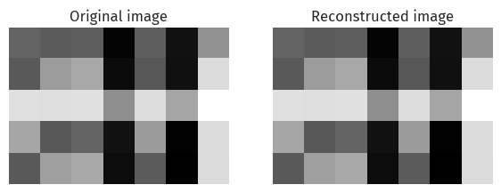
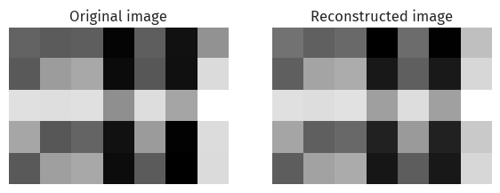
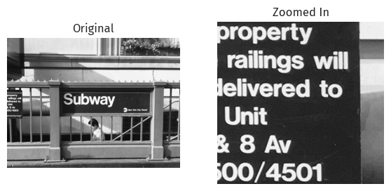
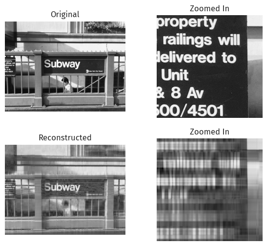
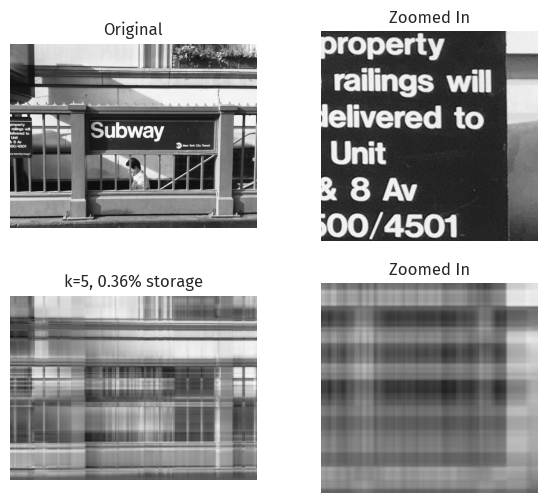
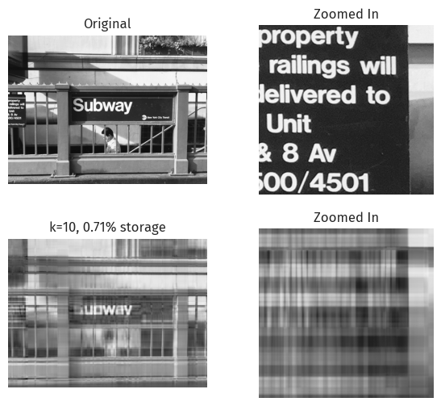
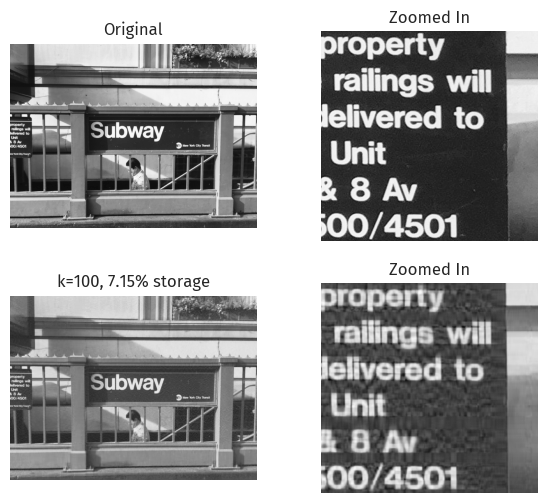
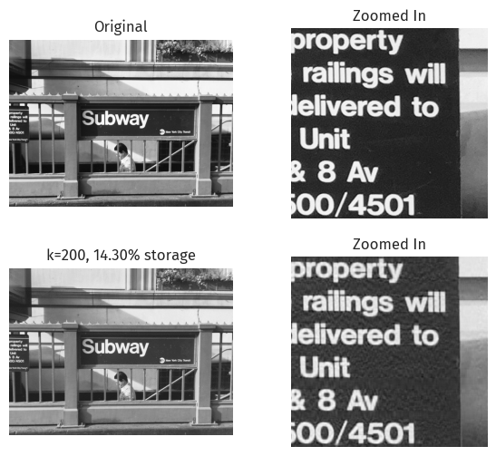
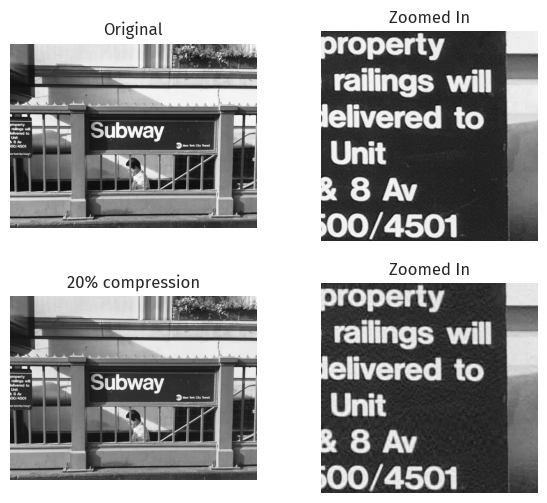
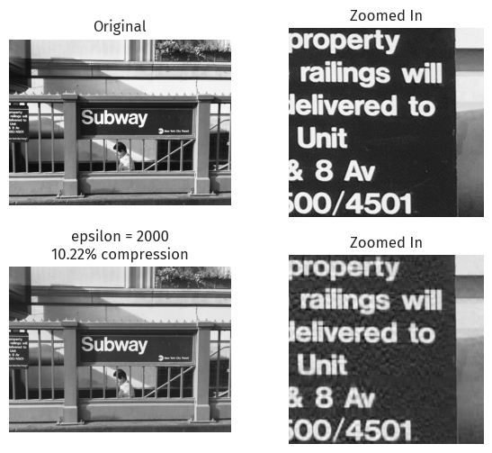

import seaborn as sns
import matplotlib.pyplot as plt
import warnings
from matplotlib import font_manager
font_manager.fontManager.addfont("C:\Windows\Fonts\FiraSans-Regular.ttf")
warnings.filterwarnings('ignore')
import numpy as np
np.random.seed(42)
sns.set_theme()
sns.set(font="Fira Sans")import svdPython source: 451-blog/svd.py at main · doabell/451-blog
Image credits: atlas.brussels
Instructions can be found at Unsupervised Learning with Linear Algebra.
SVD Image Compression
In part 1, we explore image compression with singular value decomposition (SVD).
SVD is a matrix decomposition (or factorization) method, and is used in principal component analysis (PCA) - see discussions on the relationship between SVD and PCA, on Cross Validated and the Math Stack Exchange.
Reconstruction
Here is a brief demo from the blog post instructions.
We first generate a vector representing a greyscale image:
a_1 = np.random.randint(1, 3, (5, 3))
a_2 = np.random.randint(1, 3, (3, 7))
A = a_1 @ a_2 + 0.1*np.random.randn(5, 7)In numpy, the actual SVD process is a one-liner.
sigma contains the singular values of A; we reconstruct A after creating D, the corresponding diagonal matrix.
U, sigma, V = np.linalg.svd(A)
D = np.zeros_like(A,dtype=float)
D[:min(A.shape),:min(A.shape)] = np.diag(sigma)
A_recon = U @ D @ V
svd.compare_images(A, A_recon)
We can visually confirm, at a glance, that these two images are indeed identical.
Compression
By keeping only the first k columns of U, k values of D, and k rows in V, we can reconstruct something similar to the same image, with less storage.
k = 2
U_ = U[:,:k]
D_ = D[:k, :k]
V_ = V[:k, :]
A_ = U_ @ D_ @ V_
svd.compare_images(A, A_)
Here, we have constructed a similar image, with less storage (by shrinking U, D, and V).
Real-life image
Image by Wells Baum on Unsplash.
url = "https://unsplash.com/photos/L-n-SIvQBHw/download?force=true"
# url = "https://unsplash.com/photos/L-n-SIvQBHw/download?force=true&w=640"
xlim = (0, 340)
ylim = (1390, 1060)
mta = svd.url2img(url)
svd.zoom_images(mta, xlim, ylim)
Number of components
We first try compressing by specifying the number of components.
Since this is a large image, 20 might be a good guess.
mta_ = svd.svd_reconstruct(mta, k=20)
svd.zoom_images(mta_, xlim, ylim, orig=mta)
At k=20, we can make out the “Subway” text, but not the smaller text on the left.
The contrast is also lower; the reconstructed dark parts are not as dark.
We experiment with various values of k:
svd.svd_experiment(mta)



We observe the zoomed-in text getting clearer as we increase k.
The contrast also approaches the original image.
Discussion on size
We investigate the compression rate of image compression using SVD, which is the size needed for reconstruction as a fraction of the size of the original image.
Unlike the flexible (memory) size of Python’s int, each item in NumPy’s arrays have a fixed size of numpy.ndarray.itemsize, so the total size of a NumPy array, numpy.ndarray.nbytes, is simply numpy.ndarray.itemsize * numpy.ndarray.size.
(No, the sparse matrices are in SciPy.)
NumPy’s numpy.single is “compatible with C float”1, so this is typically 8 bytes. (You can fire up gcc to make sure.) Even if it’s not, the size would stay constant, so as a proportion this can be ignored.
One other thing to ignore is NumPy arrays’ overhead, which contributes to the difference observed between numpy.ndarray.nbytes and sys.getsizeof(). As our NumPy array gets larger, however, this difference becomes very small, so we will ignore this too.
For the SVD of a matrix image of size m \times n, the size of U is m \times m, and the size of V is n \times n. While D has shape \min(m, n) \times \min(m, n), it is a diagonal matrix that can be reproduced from a 1-D vector of size \min(m, n).
When compressed by keeping the top k singular values, the sizes of U, V, and D becomes m \times k, n \times k, and k \times k (constructable with k) respectively.
Since the original image has size m \times n, the resulting compression factor would be k\frac{m+n+1}{mn}.
Compression factor
At k=200, the resulting compression factor is 14.30%, and the image preserves much of its original details.
We can observe how a larger compression factor performs:
mta_ = svd.svd_reconstruct(mta, cf=0.2)
svd.zoom_images(mta_, xlim, ylim, orig=mta, text=f"20% compression")
Even in the zoomed-in portion, apart from some spots, the reconstructed image is very similar to the original image.
Epsilon
We can also experiment with epsilon for the singular values:
mta_, U, sigma, V = svd.svd_reconstruct(mta, epsilon=2000, store_vals=True)
m, n = mta.shape
k = sigma.shape[0]
percent = 100 * k * (m + n + 1) / (m * n)
svd.zoom_images(mta_, xlim, ylim, orig=mta, text=f"epsilon = 2000\n{percent:.2f}% compression")
print(f"k = {k}")k = 143
An epsilon = 2000 for this image translates to k=143 at around 10.22% compression, similar to 10.72% at k=150 above.
What about JPEG?
JPEG image compression does not use SVD, but instead uses DCT (discrete cosine transform).
From Wikipedia’s page on JPEG:
The human eye is good at seeing small differences in brightness over a relatively large area, but not so good at distinguishing the exact strength of a high frequency brightness variation.
Therefore, a pre-determined quantization matrix can take advantage of such traits and yield a higher compression ratio.
SVD compression, on the other hand, does not seem to utilize human perception.
It is also notable that DCT is present in many well-known formats, including HEIF, MPEG, H.264, MP3, AAC, and Opus.
Therefore, there might be system- or hardware-level optimizations possible with DCT-compressed file formats over alternative methods like SVD.
Footnotes
https://numpy.org/doc/stable/reference/arrays.scalars.html#numpy.single↩︎